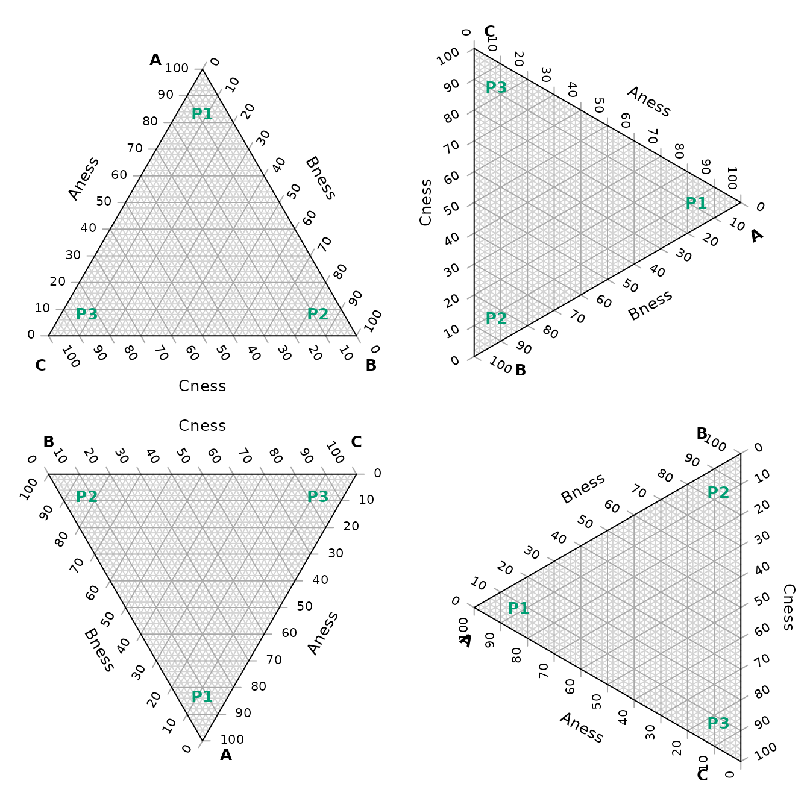
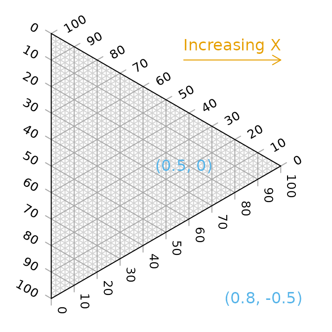
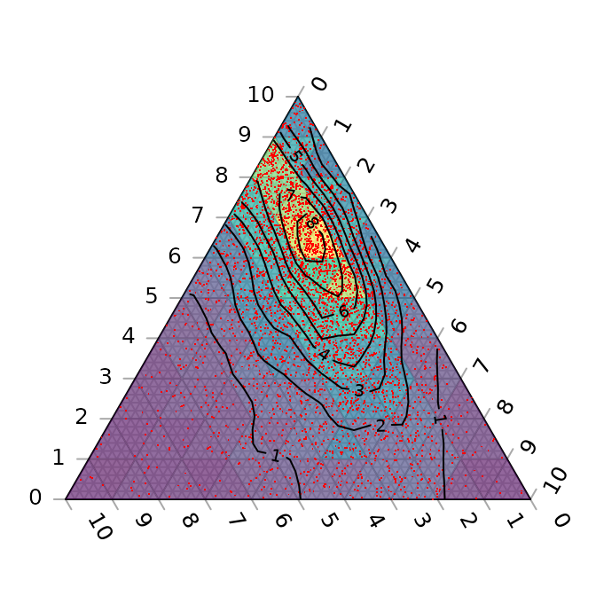

“Ternary” is an R package to allow the creation of ternary plots in the standard R graphics environment. I hope that it proves simple to use.
For simple use cases, generate Ternary plots using the point-and-click Shiny app:
install.packages("Ternary")
Ternary::TernaryApp()For greater control over your plots, use the full R implementation.
Install the package with:
install.packages("Ternary")Or if you want the latest development version of the package:
if (!require("devtools")) install.packages("devtools")
install_github("ms609/Ternary", args = "--recursive")Once the package is installed, load it into the current R session with
There are two stages to creating a ternary plot: first, rendering the plot, styled as you like it and pointing in any of the four compass directions; secondly, adding data.
Create a blank plot
At its simplest, all you need to do is type
The following charts show which corners are which, under different orientations:
par(mfrow = c(2, 2), mar = rep(0.5, 4))
for (dir in c("up", "right", "down", "le")) {
TernaryPlot(point = dir, atip = "A", btip = "B", ctip = "C",
alab = "Aness", blab = "Bness", clab = "Cness")
TernaryText(list(A = c(10, 1, 1), B = c(1, 10, 1), C = c(1, 1, 10)),
labels = c("P1", "P2", "P3"),
col = cbPalette8[4], font = 2)
}
Plot two stylised plots side by side, and plot data
# Configure plotting area
par(mfrow = c(1, 2), mar = c(0.3, 0.3, 1.3, 0.3))
# Initial plot
TernaryPlot(alab = "Redder \u2192", blab = "\u2190 Greener", clab = "Bluer \u2192",
lab.col = c("red", "darkgreen", "blue"),
main = "Colours", # Title
point = "right", lab.cex = 0.8, grid.minor.lines = 0,
grid.lty = "solid", col = rgb(0.9, 0.9, 0.9), grid.col = "white",
axis.col = rgb(0.6, 0.6, 0.6), ticks.col = rgb(0.6, 0.6, 0.6),
axis.rotate = FALSE,
padding = 0.08)
# Colour the background:
cols <- TernaryPointValues(rgb)
ColourTernary(cols, spectrum = NULL)
# Add data points
data_points <- list(
R = c(255, 0, 0),
O = c(240, 180, 52),
Y = c(210, 222, 102),
G = c(111, 222, 16),
B = c(25, 160, 243),
I = c(92, 12, 243),
V = c(225, 24, 208)
)
AddToTernary(points, data_points, pch = 21, cex = 2.8,
bg = vapply(data_points,
function (x) rgb(x[1], x[2], x[3], 128,
maxColorValue = 255),
character(1))
)
AddToTernary(text, data_points, names(data_points), cex = 0.8, font = 2)
legend("bottomright",
legend = c("Red", "Orange", "Yellow", "Green"),
cex = 0.8, bty = "n", pch = 21, pt.cex = 1.8,
pt.bg = c(rgb(255, 0, 0, 128, NULL, 255),
rgb(240, 180, 52, 128, NULL, 255),
rgb(210, 222, 102, 128, NULL, 255),
rgb(111, 222, 16, 128, NULL, 255)),
)
###
# Next plot:
###
TernaryPlot("Steam", "Ice", "Water",
grid.lines = 5, grid.lty = "dotted",
grid.minor.lines = 1, grid.minor.lty = "dotted",
point = "West")
# Another way to add a title
title("Water phases", cex.main = 0.8)
# Add horizontal grid lines
HorizontalGrid()
# Define a polygon
middle_triangle <- matrix(c(
30, 40, 30,
30, 30, 40,
55, 20, 25
), ncol = 3, byrow = TRUE)
# Add polygon to plot
TernaryPolygon(middle_triangle, col = "#aaddfa", border = "grey")
# Connect corners of polygon to plot corners
TernaryLines(list(c(0, 100, 0), middle_triangle[1, ]), col = "grey")
TernaryLines(list(c(0, 0, 100), middle_triangle[2, ]), col = "grey")
TernaryLines(list(c(100, 0, 0), middle_triangle[3, ]), col = "grey")
# Add an arrow
TernaryArrows(c(20, 20, 60), c(30, 30, 40), length = 0.2, col = "darkblue")
Styling points
More sophisticated plots can be created, for example styling each point according to additional properties of the data, in a manner analogous to the standard plotting functions:
# Configure plotting area
par(mar = rep(0.3, 4))
# Example data object
dat <- data.frame(sio2 = c(2, 4, 10, 20),
fe2o3 = c(5, 6, 7, 8),
al2o3 = c(12, 11, 10, 9),
grain_size = c(20, 16, 12, 8),
reflectance = c(80, 63, 51, 20))
# Define a colour spectrum
spectrumBins <- 255 # Number of bins to use
mySpectrum <- rowCol <- hcl.colors(spectrumBins, palette = "viridis")
# Cut our reflectance data into categories
binnedReflectance <- cut(dat$reflectance, spectrumBins)
# Assign each data point a colour from the spectrum
pointCol <- mySpectrum[binnedReflectance]
# Define a size range
maxSize <- 2.4 # Size of largest point, in plotting units
sizes <- dat$grain_size
pointSize <- sizes * maxSize / max(sizes)
# Initialize the plot
TernaryPlot(atip = expression(SiO[2]),
btip = expression(paste(Fe[2], O[3], " (wt%)")),
ctip = expression(paste(Al[2], O[3]))
)
# Plot the points
TernaryPoints(dat[, c("sio2", "fe2o3", "al2o3")],
cex = pointSize, # Point size
col = pointCol, # Point colour
pch = 16 # Plotting symbol (16 = filled circle)
)
# Legend for colour scale
PlotTools::SpectrumLegend(
"topleft",
cex = 0.8, # Font size
palette = mySpectrum,
legend = paste(
seq(from = max(dat$reflectance), to = min(dat$reflectance),
length.out = 5),
"%"
),
bty = "n", # No framing box
xpd = NA, # Don't clip at margins
title.font = 2, # Bold
title = "Reflectance"
)
# Legend for point size
PlotTools::SizeLegend(
"topright",
width = c(0, maxSize),
lend = "round", # Round end of scale bar
legend = paste(
signif(seq(max(sizes), 0, length.out = 5), digits = 3),
"\u03bcm" # µm
),
title = "Grain size",
title.font = 2, # Bold
bty = "n", # Do not frame with box
cex = 0.8
)
See the “Points” tab of the shiny app for a point-and-click implementation.
Cartesian coordinates
It is also possible to use cartesian coordinates to plot onto the graph.
By default, the plotting area is a 1×1 square.
par(mar = rep(0, 4)) # Reduce margins
TernaryPlot(point = "right", clockwise = FALSE)
cat("X range in this orientation:", TernaryXRange())## X range in this orientation: -0.0669873 0.9330127
cat("Y range in this orientation:", TernaryYRange())## Y range in this orientation: -0.5 0.5
arrows(x0 = 0.5, y0 = 0.4, x1 = sqrt(3) / 2, y1 = 0.4, length = 0.1,
col = cbPalette8[2])
text(x = mean(c(0.5, sqrt(3) / 2)), y = 0.4, "Increasing X", pos = 3,
col = cbPalette8[2])
text(x = 0.5, y = 0, "(0.5, 0)", col = cbPalette8[3])
text(x = 0.8, y = -0.5, "(0.8, -0.5)", col = cbPalette8[3])
Note the anticlockwise axis labelling on this plot, obtained using
clockwise = FALSE.
Contours
A plot can be coloured and contoured according to the output of a mathematical expression:
par(mar = rep(0.2, 4))
TernaryPlot(alab = "a", blab = "b", clab = "c")
FunctionToContour <- function(a, b, c) {
a - c + (4 * a * b) + (27 * a * b * c)
}
# Add contour lines
values <- TernaryContour(FunctionToContour, resolution = 36L, filled = TRUE)
zRange <- range(values$z, na.rm = TRUE)
# Continuous legend for colour scale
PlotTools::SpectrumLegend(
"topleft",
legend = round(seq(zRange[1], zRange[2], length.out = 4), 3),
palette = hcl.colors(265, palette = "viridis", alpha = 0.6),
bty = "n", # No framing box
inset = 0.02,
xpd = NA # Do not clip at edge of figure
)
or according to the density of points across the plot:
par(mar = rep(0.2, 4))
TernaryPlot(axis.labels = seq(0, 10, by = 1))
nPoints <- 4000L
coordinates <- cbind(abs(rnorm(nPoints, 2, 3)),
abs(rnorm(nPoints, 1, 1.5)),
abs(rnorm(nPoints, 1, 0.5)))
# Colour plot background
ColourTernary(TernaryDensity(coordinates, resolution = 10L))
# Add points
TernaryPoints(coordinates, col = "red", pch = ".")
# Contour by point density
TernaryDensityContour(coordinates, resolution = 30L)
The following image demonstrates the behaviour of the density estimates when points fall on boundaries of the triangular grid cells; text denotes the number of points within the cell, with cells straddling n cells contributing 1/n of a point to each cell straddled.

Magnification
Perhaps the action on a plot is constrained to a small region of ternary space. It’s possible to “zoom in” – i.e. magnify and crop the ternary plot to the region of interest.
To do this you can specify the x and y limits of the region of interest.
TernaryCoords might be useful in establishing the
cartesian coordinates of a particular point in ternary space.
Ensure that dx = dy if you want an isometric plot.
# Define points corresponding to corners of a region to plot
my_corners <- list(c(22, 66, 12), c(22, 72, 6), c(15, 80, 5), c(12, 76, 12))
# Print Cartesian coordinates of points
vapply(my_corners, TernaryCoords, direction = 1, FUN.VALUE = c(x = 0, y = 0))## [,1] [,2] [,3] [,4]
## x 0.2700000 0.3300000 0.3750000 0.320000
## y 0.1905256 0.1905256 0.1299038 0.103923The padding parameter is added as a margin to each side
of the region specified using xlim and
ylim:
# Remove plot margins
par(mar = rep(0, 4))
# Create clipped plotting area
TernaryPlot(xlim = c(0.28, 0.38), ylim = c(0.1, 0.2), padding = 0.04)
# Annotate grid lines at user-specified points:
TernaryText(list(c(8, 72, 20), c(8, 82, 10)), c(20, 10), srt = -60, cex = 0.9,
col = "darkgrey")
TernaryText(list(c(10, 69, 21), c(20, 64, 16)), c(10, 20), srt = 0, cex = 0.9,
col = "darkgrey")
# Plot desired polygon
TernaryPolygon(my_corners, col = "#2cbe4e88")
# Show xlim, ylim and padding, using Cartesian coordinates
lines(c(0.28, 0.28, 0.38, 0.38, 0.28), c(0.1, 0.2, 0.2, 0.1, 0.1))
text(0.28, 0.15, "xlim[1]", pos = 2, srt = 90)
text(0.38, 0.15, "xlim[2]", pos = 4, srt = 90)
text(0.33, 0.1, "ylim[1]", pos = 1)
text(0.33, 0.2, "ylim[2]", pos = 3)
text(0.38, 0.1, "<padding>", pos = 4, cex = 0.75)
text(0.38, 0.1, "<padding> ", pos = 2, cex = 0.75, srt = 90)
An alternative approach is to plot a triangular sub-region of the larger ternary space, allowing axis annotations to be read more easily.
TernaryPlot(region = my_corners) # Fit plotted region to data
TernaryPolygon(my_corners, col = "#2cbe4e88")
A region can be defined manually; the smallest triangle that covers the region will be employed.
region <- list(
c(amin = 10, bmin = 70, cmin = 0),
c(amax = 30, bmax = 70, cmax = 10)
)
TernaryPlot(region = region)
# Data will be plotted even if it falls outside the plotted axes
TernaryPolygon(my_corners, col = "#2cbe4e88")
Bugs and feature requests
I hope the package proves useful. If there”s anything it can”t do that you wish it could, please let me know by opening a Github issue.